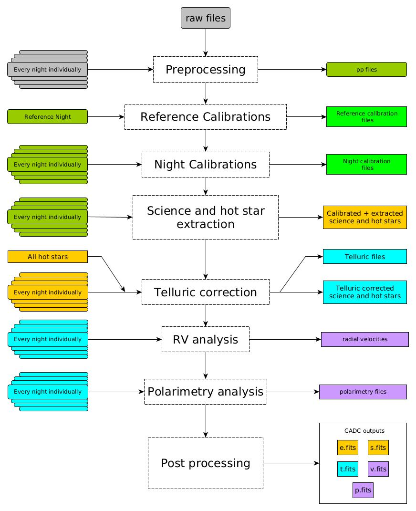

SPIRou documentation¶
SPIRou is a near-infrared (0.98-2.5um) spectro-polarimeter that saw first light at the Canada France Hawaii telescope in April 2018. SPIRou was designed to have spectral resolving power better than 70,000 and achieve a radial-velocity stability better than 1 mps (i.e. precision radial velocity, pRV). The detector is a H4RG-15 HgCdTe array (Manufacturer specifications can be found [here](http://www.teledyne-si.com/products-and-services/imaging-sensors/hawaii-4rg)) with 4096x4096 pixels, with 4 of these pixels at the top, bottom, left and right reserved as reference pixels; they are not light-sensitive and used only for common-mode readout noise rejection. Two science fibers (hereafter fibers A and B or when combined AB) are fed from the Cassegrain unit where light either comes from the telescope or from the calibration unit. The Cassegrain module also has Fresnel rhombs coupled to a Wollaston prism allowing the incoming beam to be split in to two orthogonally polarised beams. As well as the two science fibers, the fiber link also includes a calibration (or reference) fiber (hereafter fiber C). This fiber is connected directly to the calibration unit, providing light from various calibration lamps
a Flat field exposure (via a halogen lamp), referred to hereafter as a FLAT
a Uranium Neon Hollow Cathode for arc spectra referred to hereafter as an HC
a Fabry-Perot etalon with tens of thousands of lines referred to hereafter as an FP
as well as providing an option for an unilluminated dark signal, hereafter referred to as a DARK. All three fibers are passed through a slicer (to increase the spectral resolution for a given fiber size) leading to four closely packed slices per fiber.
The spectrograph itself is cross-dispersed in the perpendicular direction using an R2 echelle grating, this allows the H4RG detector to capture the entire spectral range of SPIRou on the detector with no wavelength gaps but does lead to curved echelle orders with some overlap in wavelength between consecutive orders. For SPIRou we extract 49 orders with each order spread along the 4088 pixels (grating diffraction orders #79 to #31).
The SPIRou detector control software reads the detector continuously every 5.57s and produces a 2D image (4096x4096) constructed from the linear fit of the pixel value versus time (as well as a slope, intercept, error and number of frames used for quality checks). This is the raw 2D `ramp’ image used by APERO as an initial input. This software is not provided as part of APERO (but the raw cubes are stored for future use). The `ramp’ images are supplied by CFHT (via [CADC](https://www.cadc-ccda.hia-iha.nrc-cnrc.gc.ca/en/) ) and are thus referred to as the raw images for input into APERO.
{kind=link}
Detailed documentation¶
- Sequences (SPIROU)
- Recipes (SPIROU)
- apero_preprocess_spirou
- apero_badpix_spirou
- apero_dark_spirou
- apero_dark_ref_spirou
- apero_loc_spirou
- apero_shape_ref_spirou
- apero_shape_spirou
- apero_flat_spirou
- apero_thermal_spirou
- apero_leak_ref_spirou
- apero_extract_spirou
- apero_wave_ref_spirou
- apero_wave_night_spirou
- apero_ccf_spirou
- apero_mk_skymodel_spirou
- apero_mk_tellu_spirou
- apero_mk_model_spirou
- apero_fit_tellu_spirou
- apero_mk_template_spirou
- apero_pol_spirou
- apero_postprocess_spirou
- User tools (spirou)
- File definitions (SPIROU)